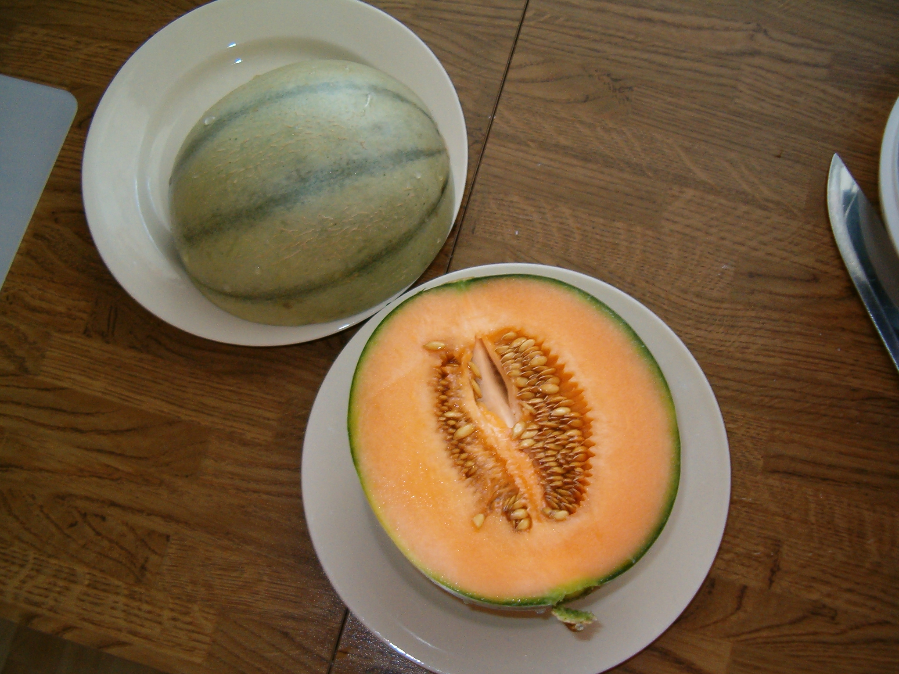

Что такое Оранжевая Дыня?
Оранжевая дыня — это не только вкусный, но и полезный фрукт. Она обладает сладким вкусом и сочной мякотью, что делает её идеальной для летних десертов и салатов.
Характеристики
- Содержит витамины A и C
- Хороший источник клетчатки
- Способствует увлажнению организма
Рецепт смузи с дыней
Для приготовления смузи вам понадобятся:
- 1 маленькая оранжевая дыня
- 1 стакан йогурта
- Лед по желанию
Смешайте все ингредиенты в блендере до однородной массы. Подавайте охлажденным!